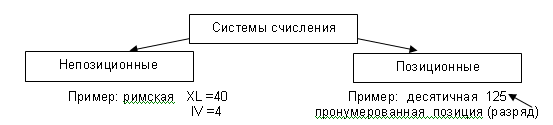
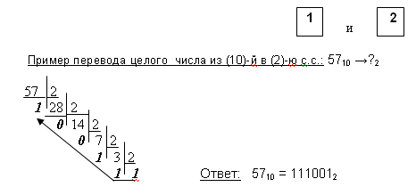
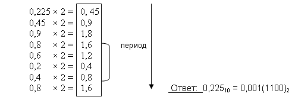
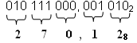
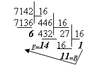
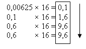
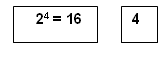
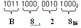
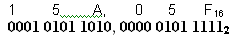

Кодирование информаций
Двоичное кодирование
Для автоматизации работы с данными разных типов важно уметь представлять их в унифицированной форме. Для этого используется кодирование.
Кодирование – это представление данных одного типа через данные другого типа. Естественные языки – это не что иное, как системы кодирования понятий для выражения мыслей с помощью речи. В качестве другого примера можно привести азбуку Морзе для передачи телеграфных сигналов, морскую флажковую азбуку.
В вычислительной технике используется двоичное кодирование, основанное на представлении данных последовательностью из двух символов: 0 и 1. Эти знаки называются двоичными цифрами, по-английски digit или сокращенно bit (бит).
Одним битом можно выразить два понятия: да или нет, черное или белое, истина или ложь, 0 или 1. Если количество битов увеличить до двух, то уже можно выразить четыре различных понятия:
Тремя битами можно закодировать 8 понятий:
001 011 100 101 110 111.
Понятие о системах счисления. Непозиционные и позиционные системы счисления
Система счисления (исчисления) – это способ представления чисел при помощи цифр или других символов (букв, знаков, иероглифов и т.п.).
 В позиционной системе счисления количественное значение цифры зависит от ее позиции в записи числа, например в числе 555 каждая «5» имеет разное численное значение, т.е. вес:
555 = 5*10² + 5*10¹ + 5*100
Таким образом, любое число в позиционной системе можно представить как сумму различных степеней «10» на соответствующий коэффициент-цифру.
В данном случае «10» – это основание системы счисления, которое показывает, во сколько раз изменяется количественное значение цифры при переходе из одного разряда в другой.
Двоичная система счисления. Перевод из (10)-й в (2)-ную с.с.
В этой системе счисления есть только 2 цифры для представления любого числа:

¡ Правило: Для перевода целого числа из (10)-с.с. в (2)-ю с.с. надо это число последовательно поделить нацело на 2 до получения 1-разрядного числа 1. Все остатки от целочисленного деления переписать в обратном порядке.
Примеры для самостоятельного решения: 44010 = ?2 6910 = ?2
Пример перевода дробной части числа из (10)-й в (2)-ю с.с.: 0,22510 →?2 
¡Правило: Для перевода дробной части числа из (10)-с.с. в (2)-ю с.с. надо дробную часть последовательно умножать на 2, получив либо бесконечную, либо конечную дробь, либо период дроби.
Примеры для самостоятельного решения: 0,12510 = ?2 0, 1710 = ?2 225,16310 = ?2
Восьмеричная система счисления.
Перевод из (10)-й в (8)-ную с.с. Перевод из (2)-й в (8)-ю с.с. и наоборот
В восьмеричной системе 8 цифр для записи любого числа (0..7). Перевод из (10)-й с.с. в (8)-ю производится аналогично переводу из (10)-й в (2)-ю.
Пример перевода целого числа из (10)-й в (8)-ю с.с.: 16810 →?8
 Ответ: 16810 = 2508
Ответ: 16810 = 2508
Пример перевода дробной части числа из (10)-й в (8)-ю с.с.: 0,0062510 →?8
 Ответ: 0,0062510 ≈ 0,003148
Ответ: 0,0062510 ≈ 0,003148
Пример для самостоятельного решения: 440,12510 = ?8
Эта система счисления используется как вспомогательная при подготовке задач к решению. Удобна из-за краткой записи числа. Основание (8)-й с.с. – 3я степень числа 2.
 - здесь количество цифр в группировке (2)-го числа,
называется триада
- здесь количество цифр в группировке (2)-го числа,
называется триада
¡ Для перевода из (2)-й с.с. в (8)-ю объединяют в триады каждые 3 цифры двоичного числа, вправо и влево от запятой.
Пример перевода числа из (2)-й в (8)-ю с.с.: 110111000, 001012 →?8
10 111 000, 001 012 - делим на группировки из 3 цифр вправо и влево от запятой, недостающие нули дописываем так, чтобы они не меняли значение числа.

Ответ: 110111000, 001012 →270,128 Пример перевода числа из (8)-й в (2)-ю с.с.: 157, 0538 →?2
157, 0538 – записываем число в разрядку, а затем каждый (8)-й разряд заменяем (2)-м, недостающие нули в триаде дописываем слева.
 Ответ: 157, 0538 =1101111,0001010112
Ответ: 157, 0538 =1101111,0001010112
Шестнадцатеричная система счисления.
Перевод из (10)-й в (16)-ную с.с. Перевод из (2)-й в (16)-ю с.с.и наоборот
В шестнадцатеричной системе 10 цифр(0..9) и 6 букв (A,B,C,D,E,F) для записи любого числа.
Используется также суффикс h, например 9ВАFh.
Перевод из (10)-й с.с. в (61)-ю производится аналогично переводу из (10)-й в (2)-ю
Пример перевода целого числа из (10)-й в (8)-ю с.с.: 714210 →?16
 Ответ: 714210 = 1BE616
Пример перевода дробной части числа из (10)-й в (16)-ю с.с.: 0,0062510 →?16
 Ответ:0,0062510 = 0,01(9)16
Применяется для записи чисел в сокращенном виде. Удобна из-за краткой записи числа. Основание (16)-й с.с. – 4я степень числа 2.
- здесь количество цифр в группировке (2)-го числа, называется тетрада.
¡Для перевода из (2)-й с.с. в (16)-ю объединяют в тетрады каждые 4 цифры двоичного числа, вправо и влево от запятой.
Пример перевода числа из (2)-й в (16)-ю с.с.: 110111000, 001012 →?16
1011 1000, 0010 10002 – делим на группировки из 3 цифр вправо и влево от запятой, недостающие нули дописываем так, чтобы они не меняли значение числа.
 Ответ: 110111000, 001012 =В8,2816
Пример перевода числа из (16)-й в (2)-ю с.с.: 15А, 05F16 →?2
15А, 05F16 – записываем число в разрядку, а затем каждый (16)-й разряд заменяем (2)-м, недостающие нули в тетраде дописываем слева.
 Ответ: 15А,05F16 =101011010,0000010111112